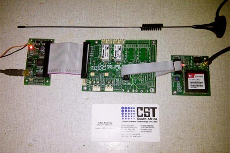

Built on Cosm > Umoya Wind Turbines
Umoya Wind Turbines
By:Jasper Pons, Allan Rumney and Adrian Padt
Location:Durban, South Africa
Web:umoyasa.co.za
Cosm feed:cosm.com/feeds/40318
Data:Energy, wind speed and temperature
Description
Umoya, which means “spirit wind” in Isizulu, is a South African startup company that manufactures Vertical Axis Wind Turbines (VAWT). In addition to providing energy from renewable resources, Umoya also pioneers the sharing of data such as energy production, wind speed, and temperature to facilitate communication between the company, investors, and the growing renewable energy community. This data runs on Cosm.
Developers
Adrian Padt and Allan Rumney, electronic and mechanical engineers with a background in manufacturing plasma cutting robotic machines, turned their attention to renewable energies in 2007 and founded Umoya to begin manufacturing VAWTs capable of producing 1kW to 15kW, enough energy for light industrial use. Ironically, they soon met their collaborator, Jasper Pons, an electronics engineer who runs, Scanman, a business specializing in developing warehouse barcodes and RFID software, while kitesurfing. The rest is history.
Challenge
To track the VAWT data set, Jasper initially thought to build his own data service. However, beyond the time and effort needed to accomplish the task, he found the cost prohibitive. In conversation with his electronics supplier, Jasper heard about people using a combination of Arduinos and a data service called Cosm to track radiation levels. He quickly chose ¬Nanodes and GSM modules to upload information directly to Cosm, finding the instant graphs and charts helpful. The price was attractive as well.
Cosm Connection
Thanks to Cosm, measured data and information from Umoya’s turbines is transparent and open to all, investors and renewable energy enthusiasts alike. Umoya benefits by directly monitoring the performance of each wind generator to ensure functionality, safety, and performance. In addition, this stream of data is critical to maintenance, design improvements, and geographical anomalies. Keeping the company invested in the product beyond installation.
Customers benefit from Cosm’s charts and graphs by truly understanding their environmental impact and their relationship to the community of like minded users. This feedback relationship between technology developers and the users plays a critical role in promoting a more sustainable approach to energy generation buttressed by actual numbers and measurements taken from their turbines.
Photos
{kind=link}